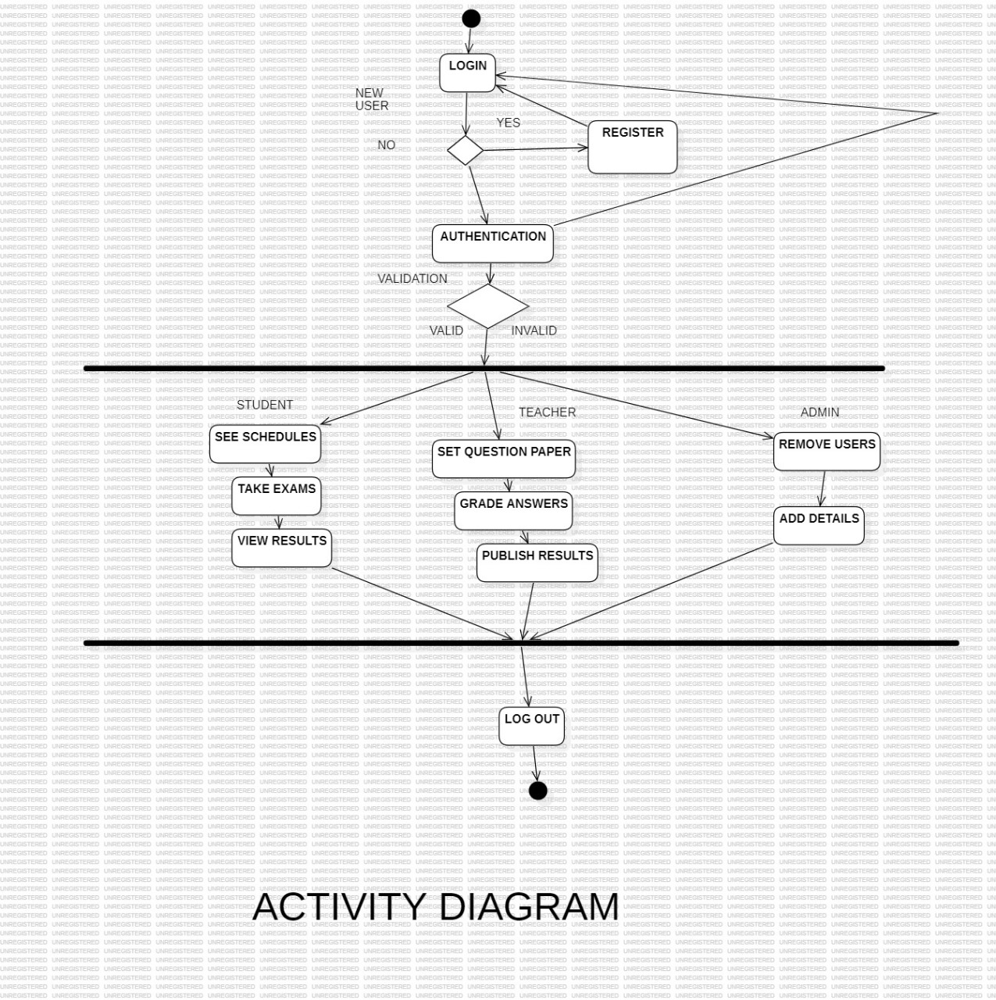
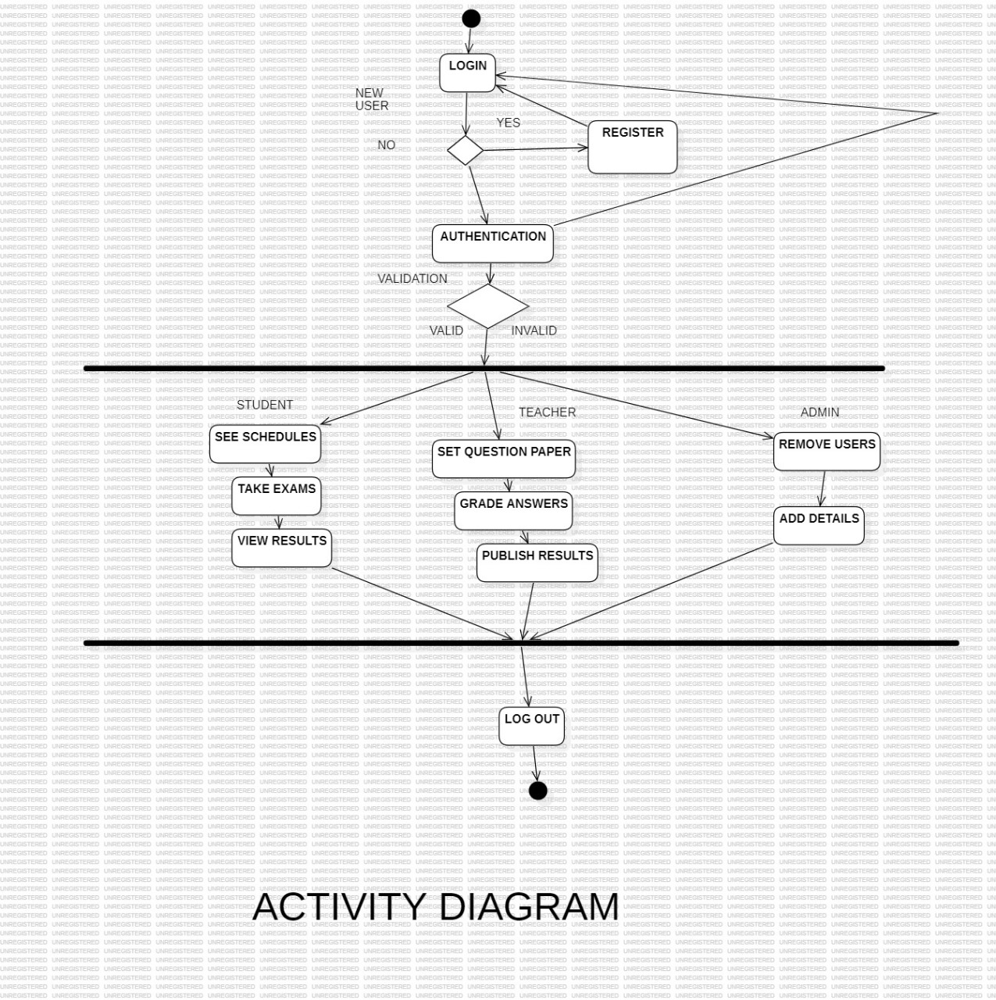

Software Requirements Specification (SRS) Online Exam Management System
Introduction
The Online Exam Management System is a web-based application designed to streamline the process of conducting and managing exams online. This system provides a platform for administrators to create, schedule, administer, and evaluate exams, while allowing students to take exams remotely from any location with internet access.
Scope
The Online Exam Management System encompasses the following functionalities:
- User Authentication: Users should be able to authenticate themselves securely to access the system.
- User Roles: The system supports different user roles such as administrators, instructors, and students, each with specific privileges.
- Exam Creation: Administrators and instructors can create exams, define question banks, set time limits, and specify other parameters.
- Exam Scheduling: Exams can be scheduled for specific dates and times, with options for recurring exams and custom scheduling.
- Exam Administration: Instructors can monitor exam sessions, view real-time progress, and intervene if necessary.
- Exam Taking: Students can access exams during scheduled times, answer questions, and submit their responses within the allocated time.
- Grading and Evaluation: Instructors can evaluate exam responses, assign grades, and provide feedback to students.
- Reporting and Analytics: Comprehensive reporting features allow administrators and instructors to analyze exam results, track performance trends, and identify areas for improvement.
-
Functional Requirements
-
User Management
- The system shall provide authentication mechanisms for users to log in securely.
- Users shall be able to register for new accounts and reset their passwords if forgotten.
- Different user roles (administrator, instructor, student) shall have specific permissions and access levels.
Exam Management
- Administrators and instructors shall be able to create exams, specifying details such as title, duration, instructions, and question format.
- Question banks shall allow the storage and categorization of questions for reuse in multiple exams.
- Exams may consist of various question types, including multiple-choice, true/false, short answer, and essay questions.
- Instructors shall be able to schedule exams, defining start and end times, duration, and any special instructions.
Exam Administration
- Administrators and instructors shall be able to create exams, specifying details such as title, duration, instructions, and question format.
- Question banks shall allow the storage and categorization of questions for reuse in multiple exams.
- Exams may consist of various question types, including multiple-choice, true/false, short answer, and essay questions.
- Instructors shall be able to schedule exams, defining start and end times, duration, and any special instructions.
Exam Administration
- Instructors shall have access to a dashboard to monitor ongoing exam sessions, view student progress, and intervene if necessary.
- Proctoring features may include monitoring of webcam feeds, screen sharing, and flagging suspicious behavior.
- The system shall support the ability to pause or extend exam sessions if required.
Exam Taking
- Students shall be able to access exams during scheduled times via the web interface.
- Exams shall be presented in a user-friendly format, with navigation controls and options to save and review answers.
- The system shall enforce time limits for exams and automatically submit responses upon expiration.
- Students shall receive confirmation upon successful submission of their exam.
Grading and Evaluation
- Instructors shall have access to tools for grading exam responses, including rubrics and scoring guides.
- Automated grading shall be available for certain question types, with manual override capabilities.
- Instructors shall be able to provide feedback and annotations on student submissions.
- The system shall calculate and record grades, which students can view after grading is completed.
Reporting and Analytics
- Instructors shall have access to tools for grading exam responses, including rubrics and scoring guides.
- Administrators and instructors shall have access to various reports on exam results, including individual student performance, class averages, and item analysis.
- Analytical tools shall allow for trend analysis, comparison of results across exams, and identification of areas for improvement.
- Reports shall be exportable in common formats such as PDF and CSV.
-
-
Non-Functional Requirements
-
Usability
- The system shall have an intuitive user interface, with clear navigation and instructions for users of all levels.
- Response times for system actions (e.g., loading exams, submitting answers) shall be optimized to ensure a seamless user experience.
Security
- User authentication and data transmission shall be encrypted to ensure the security and privacy of user information.
- Access controls shall be implemented to prevent unauthorized access to exams, questions, and grading information.
- Proctoring features shall adhere to privacy regulations and best practices.
Performance
- The system shall be scalable to accommodate a large number of concurrent users during peak exam periods.
- Database operations shall be optimized to minimize latency and ensure responsive performance.
- Backup and recovery mechanisms shall be in place to protect against data loss and ensure system availability.
Reliability
- The system shall be available 24/7, with minimal downtime for maintenance and updates.
- Error handling mechanisms shall be implemented to gracefully handle unexpected failures and prevent data corruption.
-
Glossary
- Administrator: A user with full control over the system, responsible for managing users, exams, and other system settings.
- Instructor: A user with permissions to create, schedule, and administer exams.
- Student: A user who takes exams administered through the system.
- Question Bank: A repository of questions categorized by topic or type, used for creating exams.
- Proctoring: Supervision and monitoring of exam sessions to prevent cheating and ensure exam integrity.
Conclusion
The Online Exam Management System provides a comprehensive solution for conducting exams online, offering features for exam creation, scheduling, administration, grading, and reporting. By leveraging modern web technologies and secure authentication mechanisms, the system aims to enhance the efficiency, security, and accessibility of the exam management process for administrators, instructors, and students alike.
Diagram
-
Class Diagram
-
Activity Diagram

-
Use Case Diagram
-
Data Flow Diagram(DFD) Level 1
- LEVEL-1.jpeg)
-
Data Flow Diagram(DFD) Level 2
-
Sequence Diagram

Class Diagram
Activity Diagram
Use Case Diagram
Data Flow Diagram(DFD) Level 1
Data Flow Diagram(DFD) Level 2
Sequence Diagram